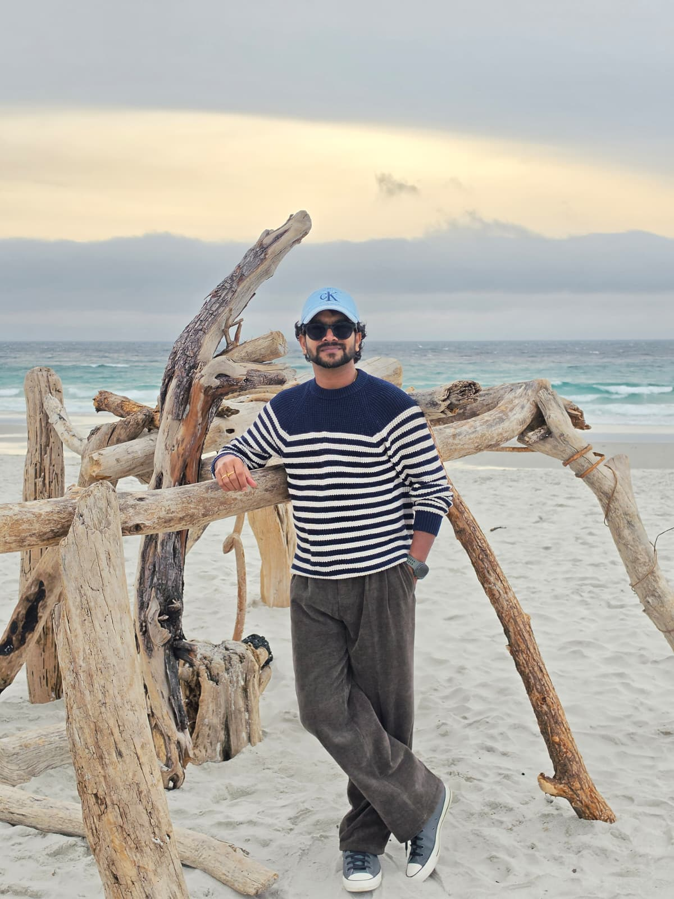

Pipelines
Medallion lakehouses that parse FHIR and X12, match patients across systems, and stop bad data before it reaches a report.
Fabric · PySpark · DeltaOver 10 years in healthcare data, starting in hospital management and clinical trials. Today I build the pipelines, models and AI agents that turn FHIR records and insurance claims into work that nurses, care managers and billers can act on.

Four kinds of work, one goal: healthcare data that is correct, explainable and used. Each one is backed by a project below.
Medallion lakehouses that parse FHIR and X12, match patients across systems, and stop bad data before it reaches a report.
Fabric · PySpark · DeltaClinical risk models with leakage-safe features, plain-English explanations and fairness checks across patient groups.
Databricks · MLflow · SHAPAI agents that gather evidence through tools, cite every fact, and leave the final decision to a person.
LangGraph · MCP · RAGDashboards and apps that rank the work for today and record what people did, so outcomes can be measured.
Power BI · Fabric AppsFive projects for CascadeCare, a fictional regional health system. They share one lakehouse and one set of synthetic patients, so together they work like a real healthcare AI platform.
Synthetic clinical and claims data flows into one governed lakehouse. Every other project reads from its Gold layer, and the readmission model writes its scores back.
100% synthetic data (Synthea) · no real patient data
Parses FHIR R4 bundles and X12 837/835 claims, matches each patient across clinical and billing records, and quarantines bad records through config-driven rules. If more than 5% of records fail, the pipeline stops before Gold and raises an alert.
An executive Power BI report on HbA1c control and claim denials, plus a Fabric App that ranks diabetic patients for outreach, explains why each one is on the list, and records every call back into the KPIs.
A 30-day readmission model on Databricks with point-in-time features, SHAP reasons for every patient and a fairness audit. A Lakeflow Job promotes a new model only when it passes an accuracy and fairness gate.
Reads an 835 denial, gathers evidence from FHIR through an MCP server, checks the payer policy and drafts an appeal. Every fact must cite a record or policy, invented references are caught, and a person approves every letter.
Turns free-text notes into FHIR Conditions, Medications and HbA1c results. Because the notes are generated from known data, every extraction is scored for precision, recall, negation errors and cost per note.
Habits from clinical trials, applied to modern data and AI.
A number is only useful if you can prove it is right.
Clinical trials taught me to validate everything. I build quality gates, reconciliations and test cases into every pipeline.
Measure the AI before you trust it.
Every model and agent I build ships with an evaluation set, so accuracy, fairness and cost are numbers, not opinions.
Build for the person who acts on it.
A care manager at 8 a.m. needs a ranked list and a reason, not another chart. I design from their workflow backwards.
I didn't come to healthcare from software. I came to software from healthcare, and that's what shapes how I build.
Postgraduate study in how hospitals run: operations, quality and patient flow.
Mixed-methods research at Nizam's Institute of Medical Sciences, Hyderabad.
5+ years as a clinical SAS programmer, where accuracy is not optional.
5+ years building Azure, Fabric and Databricks pipelines in insurance and enterprise settings, under HIPAA and GDPR.
Machine learning, generative AI and agents that care teams can trust.
10+ years across healthcare, insurance and enterprise data, from clinical trials to real-time analytics.
Build and operate Microsoft Fabric and Azure Data Factory pipelines for a large enterprise analytics program, including Real-Time Intelligence, deployments and GDPR-compliant data handling.
Worked with health insurance data under HIPAA standards.
Programmed and validated clinical trial datasets and outputs in SAS, then moved into data engineering.
I'm open to Healthcare AI Solutions Architect and Forward Deployed Engineer roles at health systems and health-tech companies.